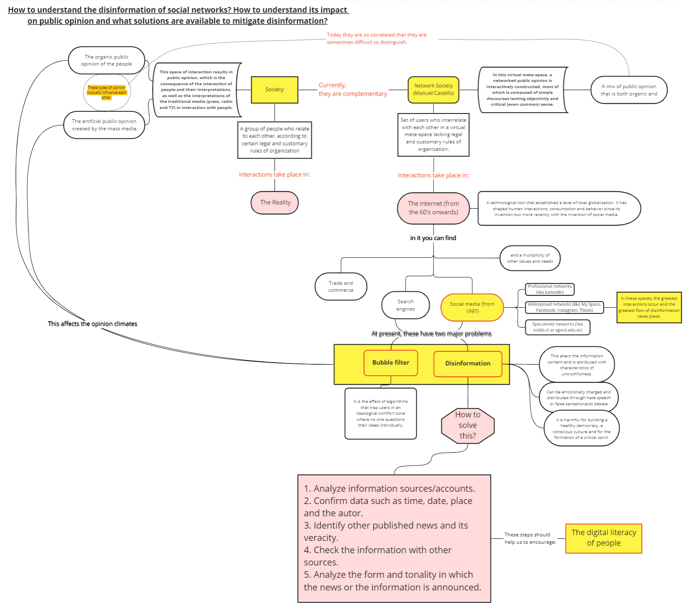

Abstract
- This proposal presents an study about the disinformation on internet.
Objectives
Introduction and Statement of the Problem

Justification
Research methodology
We have decided to carry out a survey to carry out a study on what people think about misinformation on social networks.
- What is the mean age of the population who made the survey?.
- Do you use social networks to see news?.
- What social network do you prefer to use to see news?.
- Do you know how to differentiate between an advertisement or fake news from real news?.
- Do you trust the veracity of the news you see, hear or read on the Internet and Social Networks?.
- What topic is your preference when looking for information on Social Networks?.
- Which do you feel are the most likely topic to develop through disinformation in the form of fake news?.
- Understanding that there are both traditional media (press, radio, TV) as well as Social Networks and the Internet. In which spaces do you feel there is more misinformation?.
- What traditional news media do you consume through their official portals in the social networks of these media?.
Results
Conclusions